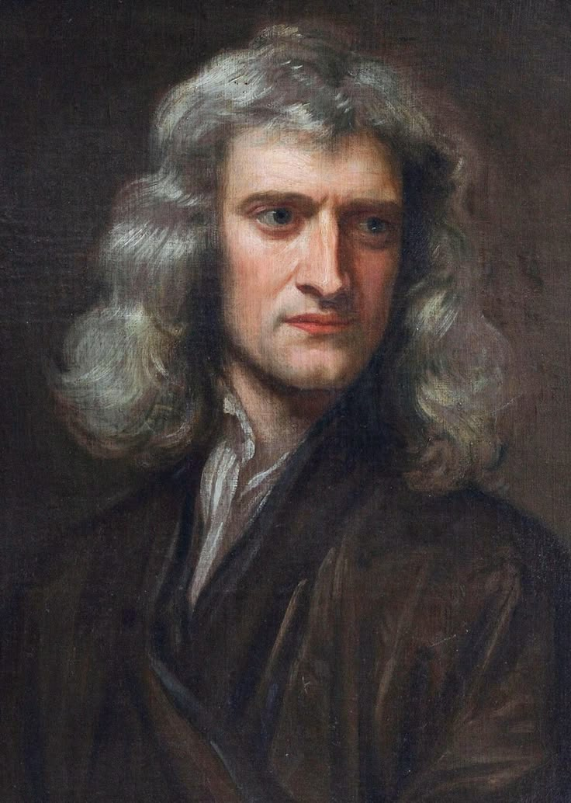

Isaac Newton
There are many brilliant minds in history, but Sir Isaac Newton stands apart because of how he looked at the world. He didn't just accept the universe as it appeared; he observed it deeply and translated its chaotic nature into pure, undeniable mathematical logic.
Discovering the laws of motion and universal gravitation wasn't just a scientific breakthrough—it was the ultimate proof that the universe operates on strict rules. For someone who values logic over blind belief, Newton is the perfect example of how absolute truth can be uncovered through relentless observation and reason.
What fascinates me most about Newton is that his most groundbreaking work—including the invention of calculus—happened during his "Year of Wonders," a time when he was isolated in the countryside to escape the Great Plague.
His story is a testament to the power of independence. It proves that within complete solitude, free from the noise and distractions of society, the human mind is capable of creating and understanding the most profound concepts in existence.